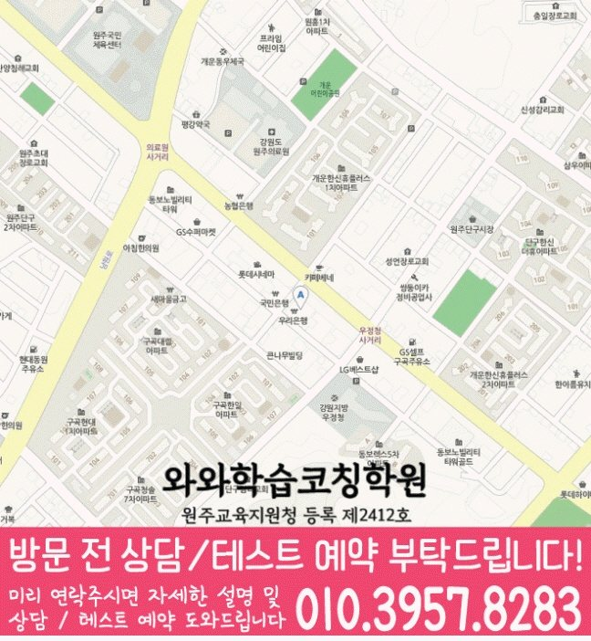

원주시 방문 정보
센터 위치 근거는 강원특별자치도 원주시 서원대로 406 리더스빌딩 402이고 세부 설명은 ‘단구동 롯데시네마 근처에 우리은행 건물 4층’입니다. 방문 전 건물명과 상담 일정을 한 번 더 확인하는 것이 좋습니다.
WAWA LEARNING COACHING CENTER · 강원 원주시
와와학습코칭센터 단구점에 관한 센터 제공 자료를 위치·과목·학년·학교 기준으로 확인하세요. 단구동 학생의 상담 전 점검 순서와 오답 재확인 방법도 담았습니다.


CENTER AT A GLANCE
원주시 와와학습코칭센터 단구점 자료에는 방문 주소와 과목별 가능 학년, 학교 참고 항목이 포함되어 있습니다. 이 세 정보를 학생의 현재 학년·과목·시험 일정과 나란히 비교해 질문 순서를 정해 보세요.
LOCAL SOURCE GUIDE
센터 위치 근거는 강원특별자치도 원주시 서원대로 406 리더스빌딩 402이고 세부 설명은 ‘단구동 롯데시네마 근처에 우리은행 건물 4층’입니다. 방문 전 건물명과 상담 일정을 한 번 더 확인하는 것이 좋습니다.
원자료가 제시한 범위는 국어는 초5, 초6, 중1, 중2, 중3, 고1, 고2; 영어는 초5, 초6, 중1, 중2, 중3, 고1, 고2, 고3; 수학은 초5, 초6, 중1, 중2, 중3, 고1, 고2, 고3; 과학은 초4, 초5, 초6, 중1, 중2, 중3, 고1; 사회는 초5, 초6, 중1, 중2, 중3, 고1, 고2입니다. 학생의 현재 진도와 희망 과목을 알려 주고 최종 가능 여부를 확인하세요.
원자료에서 읽을 수 있는 학교는 구곡초등학교, 서원주초등학교, 남원주중학교, 단구중학교, 치악고등학교, 원주고등학교, 전체 6곳입니다. 학생의 재학 학년 자료를 기준으로 활용하세요.
SUBJECT & GRADE
초5, 초6, 중1, 중2, 중3, 고1, 고2
초5, 초6, 중1, 중2, 중3, 고1, 고2, 고3
초5, 초6, 중1, 중2, 중3, 고1, 고2, 고3
초4, 초5, 초6, 중1, 중2, 중3, 고1
초5, 초6, 중1, 중2, 중3, 고1, 고2
LEARNING FLOW
상담 자료에는 점수뿐 아니라 풀이 흔적과 빈 문제, 고친 횟수를 포함해 단구동 학생의 학습 행동을 함께 확인하세요.
주간 계획은 시작 시각보다 완료 조건을 분명히 적고, 끝내지 못한 항목은 다음 날로 옮기기 전에 원인을 확인합니다.
구곡초등학교 시험 준비에서는 같은 단원 안에서 형태가 달라진 문제도 풀어 보며 암기한 풀이인지 이해한 풀이인지 점검합니다.
SCHOOL REFERENCE
학교 참고 정보는 단구동 내신 계획을 자동으로 정하는 기준이 아닙니다. 같은 학교도 학년과 시기에 따라 범위가 달라 학생 자료를 우선해야 합니다.
PARENT CONSULTATION SCENARIO
시험 직전에는 공부했지만 같은 유형을 반복해서 틀린다면 오답 원인과 재풀이 간격을 나누어 볼 수 있습니다. 와와학습코칭센터 단구점 상담을 준비할 때 다음 기준을 함께 보세요. 이 상황을 상담할 때는 국어·영어·수학·과학·사회 답안과 주간 계획에서 반복된 문제를 먼저 표시해 보세요.
상담 전에 살펴볼 행동과 기록을 예시로 정리했습니다. 실제 학생의 신원·성적·수강 결과를 담은 내용은 아닙니다.
QUESTIONS & ANSWERS
답안에서 비운 문제와 오래 걸린 문제, 고친 문제를 나누어 표시해 가져가세요. 단구동 학생이 혼자 공부할 수 있는 시간도 빠뜨리지 않는 것이 좋습니다.
공통자료에는 국어 초5, 초6, 중1, 중2, 중3, 고1, 고2; 영어 초5, 초6, 중1, 중2, 중3, 고1, 고2, 고3; 수학 초5, 초6, 중1, 중2, 중3, 고1, 고2, 고3; 과학 초4, 초5, 초6, 중1, 중2, 중3, 고1; 사회 초5, 초6, 중1, 중2, 중3, 고1, 고2로 기재되어 있습니다. 원자료에 있는 범위만 옮겼으며 없는 학년을 임의로 추가하지 않았습니다.
학교 진도와 개인 복습을 다른 칸에 기록하고, 수행평가나 시험 일정이 바뀌면 우선순위부터 다시 조정하세요.
풀이를 설명할 수 있는지, 유사 문제에도 적용되는지, 일정 시간이 지난 뒤 다시 해결되는지를 차례로 확인하세요.
표시된 참고 학교는 구곡초등학교, 서원주초등학교, 남원주중학교, 단구중학교, 치악고등학교, 원주고등학교입니다. 여기에 없는 학교를 추정해 추가하지 않으며 재학 학교는 상담 때 다시 확인합니다.
상담 전 체크
국어·영어·수학·과학·사회 문제를 개념 부족·조건 누락·실수로 나누면 재학습 우선순위를 비교하기 쉽습니다.